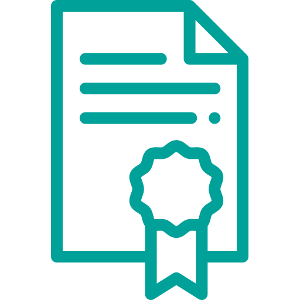
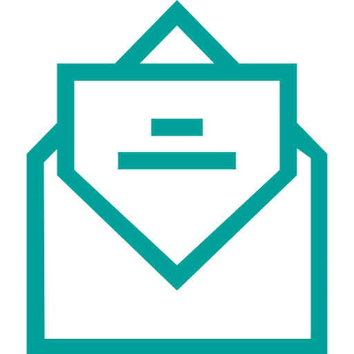
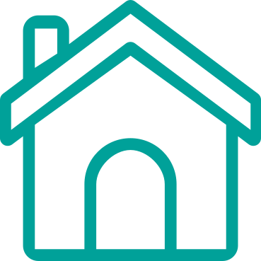
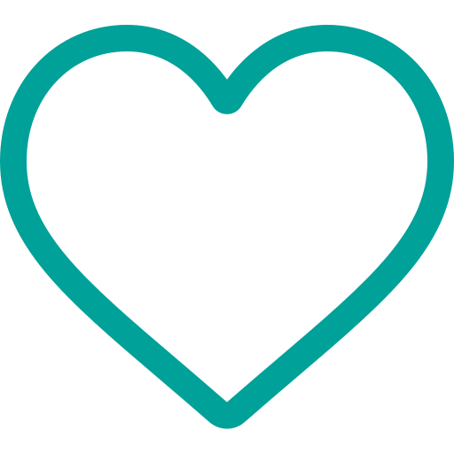

תעודת הוקרה
הזמנה
ערכת אירוח
ערכת אח
בסוף הערב, יש הנוהגים להעניק לאח/ות המספרים תעודת הוקרה על השיתוף בסיפור
ופתיחת הלב
סוגים שונים של הזמנות לשיתוף והזמנת קהל השומעים למפגשי ׳האחים שלנו׳
ערכה זו מותאמת במיוחד עבור הצרכים שלך. היא כוללת בתוכה טיפים, רעיונות, תיאום
ציפיות וכלים טכניים לקראת הערב ואחריו
ערכה זו תסייע לך בבניית הערב. היא כוללת בתוכה טיפים, רעיונות ומידע היעזרו לך
לספר את הסיפור שלך בצורה הטובה ביותר